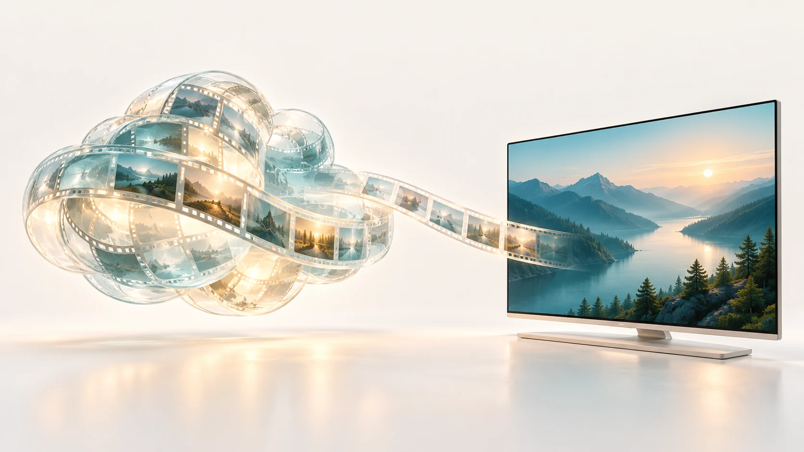

Emby
浏览媒体库、继续观看，沿用服务端的海报与影片信息。
为自己的媒体库，留一块好屏幕。
Android TV · 手机 · 平板 原生体验 · 免费开源

熟悉的收藏，原生呈现
连接 Emby 或绿联影视中心，海报、简介与媒体库直接呈现。
从浏览、选片到继续观看，留在同一套原生界面。

浏览媒体库、继续观看，沿用服务端的海报与影片信息。
独立服务入口，浏览电影与剧集，查看详情并原生播放。
保留文件来源和播放链接入口，让不同收藏各有所归。
精致设计
通透的液态玻璃、柔和的层次与克制的动效。
海报、背景与导航自然衔接，让内容留在视觉中心。

个性化
多种主题与材质，自定义配色，也能跟随系统动态色。
界面和字幕分别选字，把熟悉的阅读感带到大屏。
今晚，看点喜欢的。
配色示意 · 晴蓝
七种主题色与自定义色盘，搭配不同材质和深浅外观，形成自己的整套色阶。

支持从本机导入 TTF、OTF、TTC。界面字体与字幕字体分开设置，大小、描边和位置也能按习惯调整。
原生播放
字幕、音轨、倍速与画面比例，集中在原生播放控件里。
接着上次的进度看，也能为影片选择偏好的音轨。

STRM 与大文件
直达媒体地址，按需读取大文件。更深的预缓冲配合设备内存预算，照顾高码率播放与进度拖动。
在 SunnyTV 播放器里，直接查询和切换 115 已生成的云端档位。视频优先直连云端 CDN，无需 NAS 重新编码。
需有效的 MediaIndex 播放入口，实际档位由片源返回。

为遥控器认真设计
清晰焦点、方向键导航与返回位置记忆。海报墙和播放面板各有明确的移动路径，让大屏上的选择更从容。
试试左右切换
云上邮局
遥控焦点示意
SP658E 灯带氛围
把屏幕四边的色彩，延伸成房间里的氛围。画面同步、固定色、亮度与灯珠定位，都能在应用内调整。